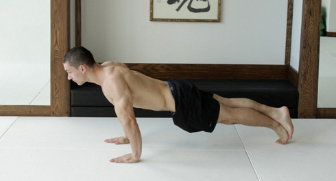
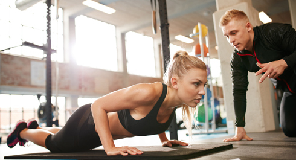

For many people and for us in particular, the training at outdoor sports grounds began with the moment that we saw the performance of unusual push-ups by the members of the team ‘Bar-tendaz’. Frankly speaking, at that time they made a great impression on us, but you must first learn the basic options of push-ups to do such stuff. That’s what will be discussed in today's infopost!
Push-ups

Push-ups is a basic exercise, which enables multiple joints and the large groups of muscles at the same time. The exercise is performed on the floor or on any other surface, not necessarily firm. Performance of push-ups includes the work of the pectoral muscles and triceps. Arterior deltas’ bundles, forearm, the small muscles of the hand, the muscles of the lower back, abs and quads are loaded indirectly.
Key points
1. The greater the amplitude of motion, the more muscles are involved in the process, so try to do push-ups until you touch the floor with your nose or your chest.
2. Hold the muscles of the arms, back, abdomen and legs in tension. Your body should form a straight line. Keep this straight line throughout the exercise.
3. Go down slowly and then rise up quickly to achieve the maximum effect from the exercise.
4. Exercise only by means of the strength of the arms and pectoral muscles.
5. Breathe in while lowering, and exhale on the upward movement.
Safety procedures
Push-up is one of the safest bodyweight exercises, despite on its effectiveness! Nevertheless, you should follow the proper technique recommendations given below:
1. Perform the motion following the natural path.
2. Don’t arch and don’t round your back, don’t bend at the lumbar. Imagine that a straight line passes through the back of your neck, then between the scapulae to the buttocks. This straight line should be maintained all the time.
3. Don’t make jerks and sudden movements.
4. Don't raise your head up, but do not lower it too low. Look ahead at the floor.
5. If you experience discomfort, then don’t continue the exercise and try another variation.
The exercise itself can be divided into 4 components:
1. Take the push-up position, hands are slightly wider than shoulder width.
2. Tighten your whole body, building up a straight line from head to toe.
3. Bending your arms at the elbows, lower yourself to touch the floor with nose or chest muscles.
4. Straightening your arms up by the force of the chest muscles and muscles of the arms, return to the starting position.
Simplified versions of push-ups
We will discuss the different types of push-ups in the ADVANCED block. But for now, if you can't perform full push-ups, you can use the following options as the lead-in exercises.
If you haven’t enough strength to perform classic push-ups, try to perform push-ups on your knees. This preliminary exercise will allow you to feel the work of the pectoral muscles and will teach you how to bend hands at the elbows.

The following variant of push-ups is easier than the ordinary one (push-ups from the floor) due to the fact that the gravity center of your body is shifted upwards.
Useful advice
The position of the hands. If you are just beginning to practice, then we would recommend you to find a comfortable position of hands at the shoulders width (a little wider/due to your own feelings) and to improve this variant during the entire BASIC level iin order to learn the right technique.
In the ADVANCED block you will learn how you can use different muscles and their departments to increase the effectiveness of this exercise by changing the position of hands!
The feet position. The wider the distance between the feet, the easier it is to perform push-ups. The narrower it is, the harder it’ll be to do it. You can also try to put one leg on the other.
Depth of push-ups. We have said that deep push-ups are the most effective. But it can be uncomfortable for some people to go down lower than 90 degrees at the elbows, especially at the beginning. This is normal and you can continue to do as you wish. Over time you’ll get used to it and will be able to increase gradually the amplitude of the push-ups, strengthening your elbow and shoulder joints by that.
Wrists. You can hurt your hand and wrist, if you did push-ups not so often earlier. It’s normal and this is connected with stiffness of these joints. We recommend you to choose the most comfortable position of the hands on the floor and do push-ups that way. Gradually your hand and wrist will get used to the load and will become stronger. Alternatively, you can do push-ups on the fists or on the stops for push-ups, simultaneously improving the flexibility of the wrist with appropriate exercises. A detailed post about stretching will be at the end of this week.